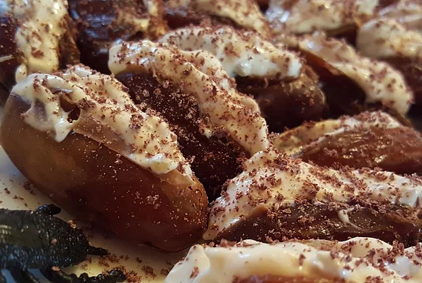

Stuffed Roaches

Halloween Appetizer With Dates
Dates stuffed with a walnut cream cheese mixture. These look really gross, but the kids love them! These are time-consuming, so kick back in a recliner and feel free to watch a movie as you are stuffing them.
Ingredients
- 1 (8 ounce) package fat-free cream cheese, softened)
- 1/4 cup finely chopped walnuts
- 2 (8 ounce) packages whole pitted dates
Steps
- Mix cream cheese and walnuts together in a small bowl.
- Slice one side of each date lengthwise using a small sharp knife, creating an opening.
- Carefully spoon cream cheese mixture into the middle of each date and pinch the dates closed.
- Stack them on a plate with cut sides down and you have a beautifully gross Halloween themed appetizer.